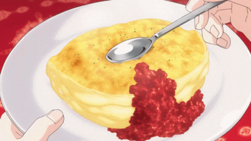

Mini Soufflé Omelette

Description
Mini Soufflé Omelette is a dish made by Sōma Yukihira for the Breakfast Buffet Challenge during the 92nd Tōtsuki Generation's Tōtsuki Friendship and Rapport Training Camp.
Ingredients
- Flour
- Egg Whites
- Cream
- Egg Yolk
- 7 Chicken wings
- Sesame oil, 1 tablespoon
- 4 Eggs
- Diced Spring Onion
Recipe
- Preheat a nonstick pan over medium low heat.
- In a clean mixing bowl, add the egg whites and beat until medium stiff peak. The meringue should be able to form a peak but still very slightly curls at the hook.
- In a separate bowl, whisk together the egg yolks, heavy cream, and salt. Once homogenous, pour it on top of the meringue and gently fold it until no more large chunks of white is visible. However, DO NOT overmix the meringue. Overmixing will cause the meringue to deflate and the omelette to collapse and become super flat.
- Add the butter into the preheated pan and swirl the butter around to spread. Pour the omelette meringue into the pan. Keep it piled high. Using a rubber spatula, shape the omelette into a circle as best as you can, then spread the omelette to flatten it out to about 1 inch thick. Cover the pan and let the omelette cook over medium low heat for 3 minutes until the bottom of the omelette is golden brown.
- Gently fold the soufflé omelette in half and slide it off the pan. Serve the omelette immediately with the special tomato sauce and a sprinkle of chopped or dry parsley.
Osumatsu!
Go back to Homepage